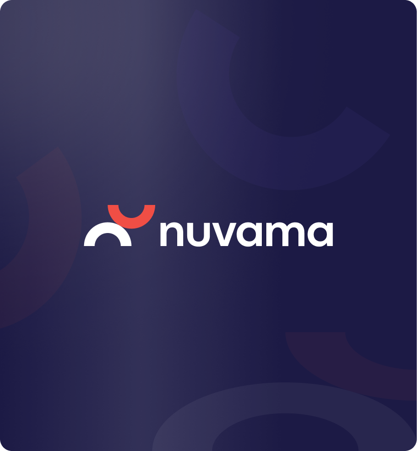
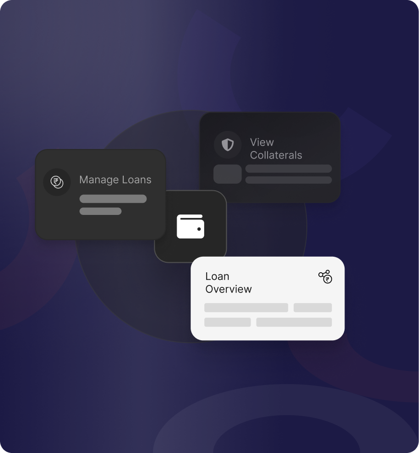
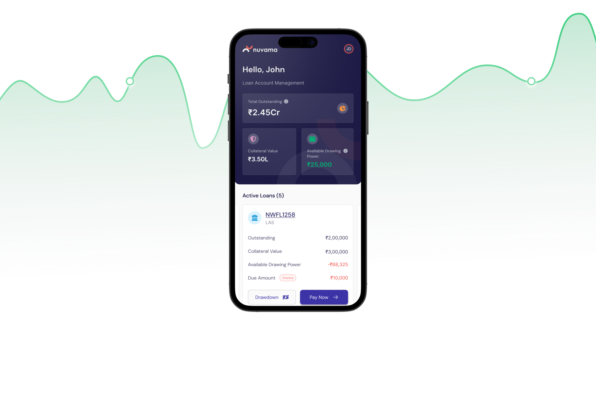
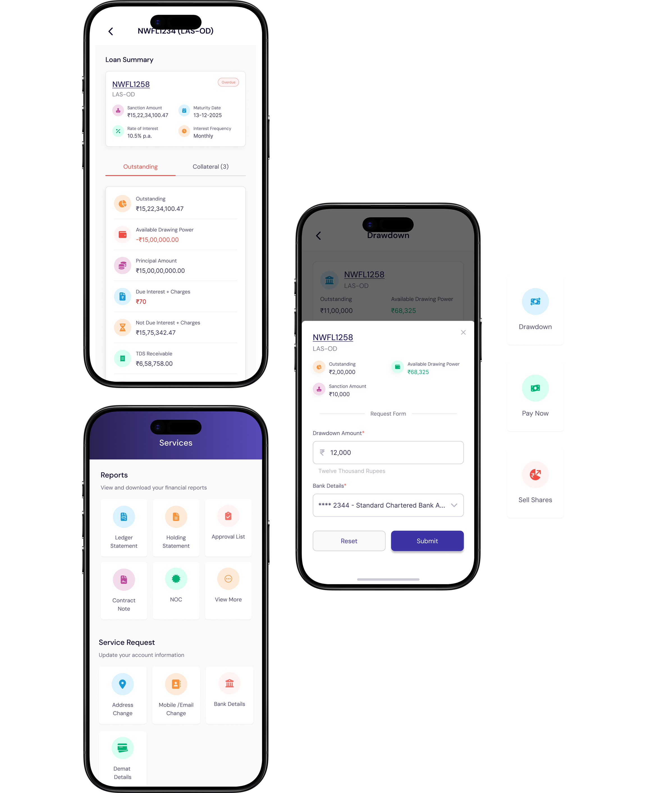
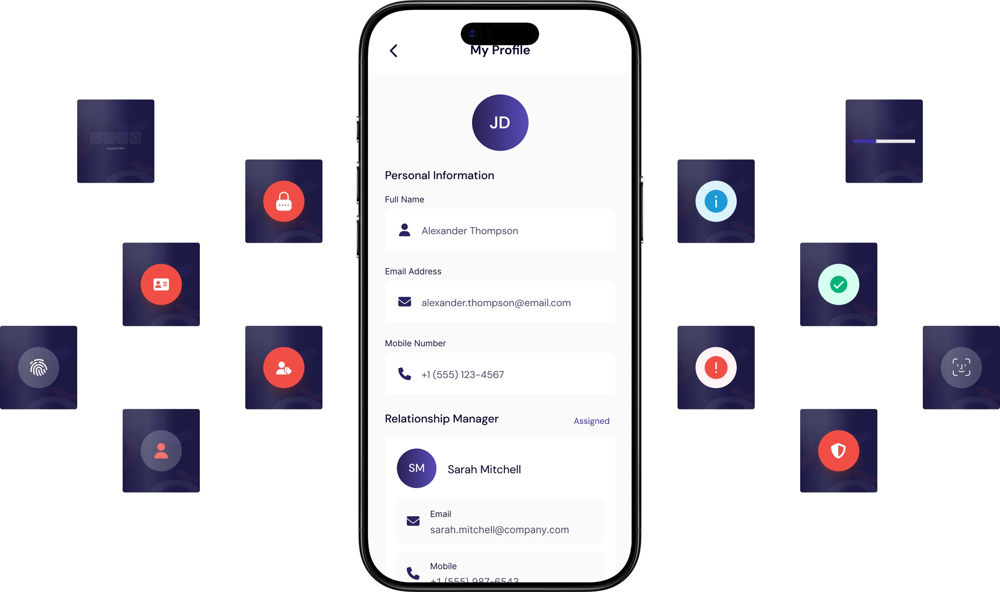

The Challenge
HNI clients managing crore-level loan accounts had no mobile-native way to independently monitor their loan health, initiate transactions, or access financial reports. Every action meant a call or email to a relationship manager a dependency that didn't match the expectations of a digitally-savvy, time-sensitive clientele.
- Multi-crore loan values, collateral portfolios, haircut percentages, and overdraft structures all had to be surfaced clearly on a 375px screen.
- HNI investors expect precision and zero ambiguity. Any confusion in a drawdown or repayment flow isn't just a UX issue, it's a financial one.
- Four sections, mobile and tablet, 1.5 months with multiple stakeholder review cycles and numerous revision rounds.
- Every screen required fully designed error, empty, loading, and success states. Nothing could be left undefined for dev.


The Approach
Given the complexity of the financial domain and a tight three-month timeline, the process was built around quick alignment before execution so design decisions made in week one could carry through all four sections consistently.
- Discovery: Studied the LAS product domain, loan types, collateral mechanics, and client workflows alongside the lead designer and stakeholders before touching a single frame.
- Information Architecture: Mapped what data needed to surface on each screen and how to prioritize it for HNI users who care about outstanding values and drawing power first.
- Wireframing: Rapid low-fidelity exploration of layout patterns, especially for dense data screens like Loan Details and the multi-step Transact flows.
- High Fidelity Design: Built on Nuvama's existing component library DM Sans, navy/purple palette, established card and form components extending patterns only where the existing system fell short.
- State Coverage: Defined complete state sets for every screen: default, loading, empty, error, and success fully dev-ready before handoff.

The Solution
Each section of the app solved a distinct user need but all four were designed as part of the same system, sharing patterns, components, and logic so the experience felt unified across every screen.
-
Loan Level Details The core screen of the app where an HNI client lands to immediately understand the financial health of their loan and take action without navigating away.
- A sticky summary card keeps loan vitals (Drawing Power, Maturity Date, Rate) persistent across tab switches critical context that never disappears mid-decision.
- Color coded data rows (red for dues, green for drawing power, grey for secondary figures) let users sense loan health at a glance, before reading a single number.
-
Transact Handles all financial actions Drawdown, Repayment, and Sell Shares to Repay with a form experience designed to be fast, contextual, and error-resistant for high-value inputs.
- A contextual bottom sheet surfaces the transaction form over the loan card list, keeping loan context visible behind the overlay no navigation, no lost context.
- Loan limits are embedded directly in the form before the user inputs an amount, preventing errors before they happen.
- Every transaction path has fully designed success and error states with specific messaging and clear recovery actions.
-
Services Consolidates financial Reports and Service Requests into one tab making a potentially overwhelming utility section feel scannable and purposeful.
- Services are presented as a color-coded icon grid rather than a list, reducing cognitive load and making each action immediately recognizable.
- Section groupings with descriptor subtitles and smart contextual banners (like the Holding Statement date logic) eliminate common support queries before they're raised.
-
Order Status Gives clients full visibility into archival and disbursement transactions tracking what was requested, when, and its current state.
- A pre-selected "Last 5 Transactions" chip serves the most common use case by default, while a filter icon handles power-user needs without cluttering the base experience.
- Status badges (green for Completed, amber for Processing) communicate order state instantly no reading required.

Design Highlights
- Bottom Sheet as Navigation All transactional forms surface as bottom sheets over contextual content keeping the user anchored to their loan context throughout high-stakes actions, never losing sight of where they are.
- Expandable Collateral Cards Collapsed summary, expanded detail view on tap. Progressive disclosure keeps the collateral list scannable while making full data qty, CMP, haircut, third-party values available on demand.
- Semantic Color System Red for dues, green for drawing power, orange for overdue, purple for primary actions. HNI users can sense loan health before reading a single figure.
- Consistent Icon Grid Language Transact, Services, and Order Status all use the same 3-column icon tile grid as their entry point one pattern across three sections, zero additional learning curve.
- Complete State Coverage Every screen delivered with default, loading, empty, error, and success states. For a financial app, designed recovery states were non-negotiable.
- Tablet Adaptation All four sections adapted for tablet side-by-side layouts, 4-column icon grids. The component system scaled cleanly without custom redesigns.

The Outcome
Within a 1.5month engagement, all four sections were designed, reviewed, and signed off by the client handed off to development with zero ambiguity.
- 4 Core sections designed end-to-end: Loan Details, Transact, Services, and Order Status, each with full flow coverage from entry to terminal states.
- 2× Platform coverage: every section approved for both mobile and tablet, without custom rebuilds.
- 5+ States per screen: default, empty, loading, error, and success designed for every screen, giving dev a complete spec for every edge case.